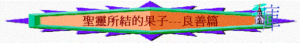

一.良善的意義
「弟兄們，我自己也深信你們是滿有良善，充足了諸般的知識，也能彼此勸戒。」羅15:14
∼良善的希臘文是‘agathosune’英文譯‘goodness’和合本譯良善
∼‘agathosune’源於‘agathos’英文譯‘good’‘well’‘benefit’和合本譯「善」「好」「有益」「善良」「上好」「善行」「無虧的」
1.是美好
2.是有益
3.與惡相反
「作官的原不是叫行善的懼怕，乃是叫作惡的懼怕。你願意不懼怕掌權的嗎？你只要行善，就可得他的稱讚；」羅13:3
4.不含邪惡污穢的事
二.要良善原因
1.因是光明的子女
「光明所結的果子就是一切良善、公義，誠實。」弗5:9
2.因是真神的旨意
「我們原是他的工作，在基督耶穌裡造成的，為要叫我們行善，就是神所預備叫我們行的。」弗2:10
3.可不怕掌權的人
「作官的原不是叫行善的懼怕，乃是叫作惡的懼怕。你願意不懼怕掌權的嗎？你只要行善，就可得他的稱讚；」羅13:3
4.坦然到基督臺前
「因為我們眾人必要在基督臺前顯露出來，叫各人按著本身所行的，或善或惡受報。」林後5:10
5.能結豐盛的果實
「那落在好土裡的，就是人聽了道，持守在誠實善良的心裡，並且忍耐著結實。」」路8:15
6.叫基督得著榮耀
「因此，我們常為你們禱告，願我們的神看你們配得過所蒙的召，又用大能成就你們一切所羨慕的良善和一切因信心所做的工夫；叫我們主耶穌的名在你們身上得榮耀，你們也在他身上得榮耀，都照著我們的神並主耶穌基督的恩。」帖後1:11-12
三.良善的源頭
1.神的誡命
「這樣看來，律法是聖潔的，誡命也是聖潔、公義、良善的。」羅7:12
2.神的旨意
「不要效法這個世界，只要心意更新而變化，叫你們察驗何為神的善良、純全、可喜悅的旨意。」羅12:2
「因此，我們自從聽見的日子，也就為你們不住的禱告祈求，願你們在一切屬靈的智慧悟性上，滿心知道神的旨意；好叫你們行事為人對得起主，凡事蒙他喜悅，在一切善事上結果子，漸漸的多知道神；」西1:9-10
3.聖靈果子
「聖靈所結的果子，就是仁愛、喜樂、和平、忍耐、恩慈、良善、信實、」加5:22
4.神的成就
「因此，我們常為你們禱告，願我們的神看你們配得過所蒙的召，又用大能成就你們一切所羨慕的良善和一切因信心所做的工夫；」帖後1:11
5.上頭智慧
「惟獨從上頭來的智慧，先是清潔，後是和平，溫良柔順，滿有憐憫，多結善果，沒有偏見，沒有假冒。」雅3:17
四.良善的表現
1.不效法惡
「親愛的兄弟啊，不要效法惡，只要效法善。行善的屬乎神；行惡的未曾見過神。」約三1:11
2.樂意捐項
「弟兄們，我自己也深信你們是滿有良善，充足了諸般的知識，也能彼此勸戒。」羅15:14
「因為馬其頓和亞該亞人樂意湊出捐項給耶路撒冷聖徒中的窮人。這固然是他們樂意的，其實也算是所欠的債；因外邦人既然在他們屬靈的好處上有分，就當把養身之物供給他們。」羅15:26-27
「所以，有了機會就當向眾人行善，向信徒一家的人更當這樣。」加6:10
3.不以惡報惡
「你們要謹慎，無論是誰都不可以惡報惡；或是彼此相待，或是待眾人，常要追求良善。」帖前5:15
4.守主誡命
「有一個人來見耶穌，說：「夫子（有古卷：良善的夫子），我該做什麼善事才能得永生？」耶穌對他說：「你為什麼以善事問我呢？只有一位是善的（有古卷：你為什麼稱我是良善的？除了神以外，沒有一個良善的）。你若要進入永生，就當遵守誡命。」」太19:16-17
5.顧念窮人
「耶穌說：「你若願意作完全人，可去變賣你所有的，分給窮人，就必有財寶在天上；你還要來跟從我。」」太19:21
「在約帕有一個女徒，名叫大比大，繙希利尼話就是多加（就是羚羊的意思）；他廣行善事，多施賙濟。」徒9:36
6.跟隨基督
7.養育兒女
「又有行善的名聲，就如養育兒女，接待遠人，洗聖徒的腳，救濟遭難的人，竭力行各樣善事。」提前5:10
8.接待遠人
9.服事門徒
10.忠心事主
「主人說：『好，你這又良善又忠心的僕人，你在不多的事上有忠心，我要把許多事派你管理；可以進來享受你主人的快樂。』」太25:21